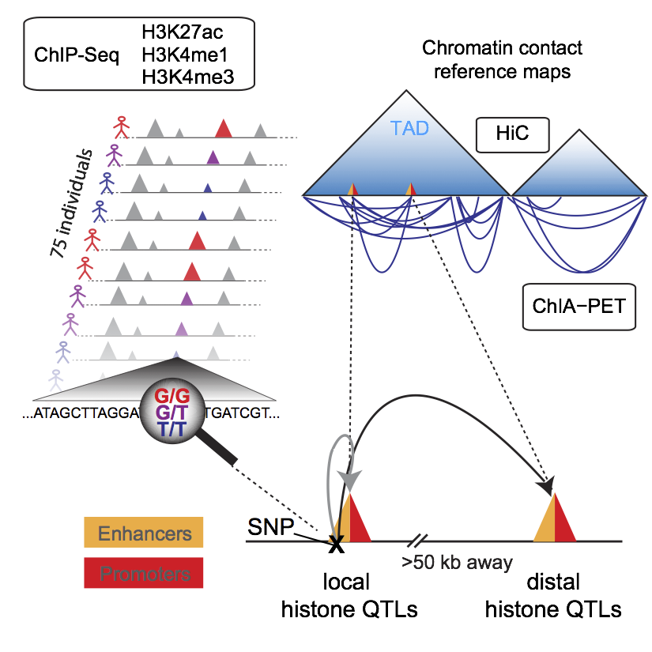

Abstract
|
Deciphering the impact of genetic variants on gene regulation is fundamental to understanding human disease. Although gene regulation often involves long-range interactions, it is unknown to what extent non-coding genetic variants influence distal molecular phenotypes. Here, we integrate chromatin profiling for three histone marks in lymphoblastoid cell lines (LCLs) from 75 sequenced individuals with LCL-specific Hi-C and ChIA-PET-based chromatin contact maps to uncover one of the largest collections of local and distal histone quantitative trait loci (hQTLs). Distal QTLs are enriched within topologically associated domains and exhibit largely concordant variation of chromatin state coordinated by proximal and distal non-coding genetic variants. Histone QTLs are enriched for common variants associated with autoimmune diseases and enable identification of putative target genes of disease-associated variants from genome-wide association studies. These analyses provide insights into how genetic variation can affect human disease phenotypes by coordinated changes in chromatin at interacting regulatory elements. |
 |
AUTHORS
Fabian Grubert 1,7, Judith B. Zaugg1,2,7, Maya Kasowski1,7, Oana Ursu1,7, Damek V. Spacek1, Alicia R. Martin1, Peyton Greenside3, Rohith Srivas1, Doug H. Phanstiel1, Aleksandra Pekowska2, Nastaran Heidari1, Ghia Euskirchen1, Wolfgang Huber2, Jonathan K. Pritchard1,4,5, Carlos D. Bustamante1, Lars M. Steinmetz1,2, Anshul Kundaje1,6, and Michael Snyder1,*
AFFILIATIONS
- 1) Department of Genetics, Stanford University School of Medicine, Stanford, CA 94305, USA
- 2) The European Molecular Biology Laboratory Heidelberg, 69117 Heidelberg, Germany
- 3) Biomedical Informatics Graduate Training Program, Stanford University School of Medicine, Stanford, CA 94305, USA
- 4) Department of Biology, Stanford University, Stanford, CA 94305, USA
- 5) Howard Hughes Medical Institute, Stanford University, Stanford, CA 94305, USA
- 6) Department of Computer Science, Stanford University, Stanford, CA 94305, USA
- 7) Co-first author
- *) Correspondence: mpsnyder@stanford.edu
Visualization
 DATA SOURCE
DATA SOURCE
- Code used for this analysis is at: https://github.com/kundajelab/chromovar3d
Show local QTLs
Show distal QTLs
Show signal tracks
Show HiC (takes several minutes to visualize according to your computer resources)
Show ChiA-PET
Open in a new page (deactivate pop-up blockers)
Legend for QTL tracks: The QTL tracks contain all associations passing the p-value threshold corresponding to a 10% FDR. Each association is represented in the "interaction" format, that is, as a link between the QTL SNP (1 base) and the peak. The scores (colors of the links) represent the association effect sizes.